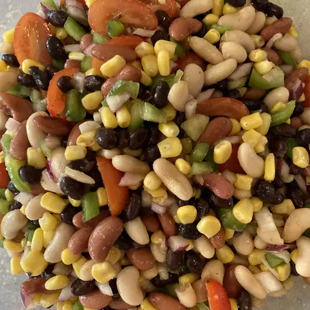

Mexican Bean Salad Recipe

Description
This bean salad with corn is colorful, spicy, and refreshing.
Prep Time: 15 mins, Additional Time: 1 hour, Servings: 8
Ingredients
- 1 (15 ounce) can black beans, rinsed and drained
- 1 (15 ounce) can kidney beans, rinsed and drained
- 1 (15 ounce) can cannellini beans, rinsed and drained
- 1 green bell pepper, chopped
- 1 red bell pepper, chopped
- 1 (10 ounce) package frozen corn kernels, thawed
- 1 red onion, diced
- ½ cup olive oil
- ½ cup red wine vinegar
- ¼ cup chopped fresh cilantro
- 2 tablespoons fresh lime juice
- 1 tablespoon lemon juice
- 1 clove garlic, crushed
- 2 tablespoons white sugar
- 1 tablespoon salt
- 1 ½ teaspoons ground cumin
- 1 ½ teaspoons ground black pepper
- ½ teaspoon chili powder, or to taste
- 1 dash hot pepper sauce, or to taste
Directions
- Combine beans, bell peppers, corn, and red onion in a large bowl.
- Whisk olive oil, vinegar, cilantro, lime juice, lemon juice, garlic,
sugar, salt, cumin, and black pepper together in a small bowl. Season
with chili powder and hot sauce.
- Pour dressing over bean mixture and toss well. Refrigerate until chilled,
about 1 hour. Serve cold.
Nutrition Facts (per serving)
- Calories: 334
- Fat: 15g
- Carbs: 42g
- Protein: 11g